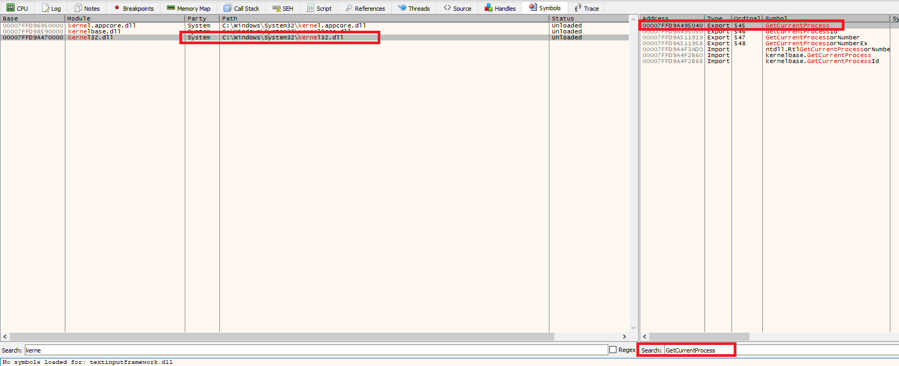
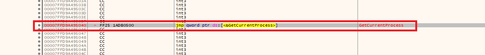
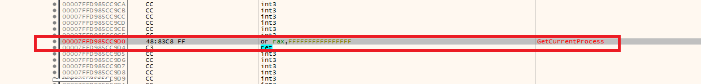
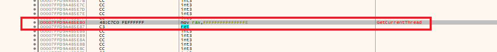
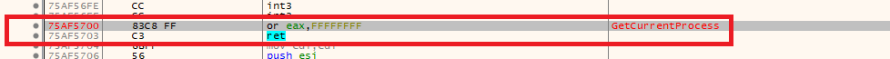

Introduction
As demonstrated earlier, utilizing API hashing to mask an implementation's IAT is an effective method. However, sometimes replacing a WinAPI itself, if feasible, can enhance the concealment of the IAT decreasing the number of hash values, as well as reducing potential heuristic signatures connected to the API hashing algorithm. Furthermore, implementing custom code for a WinAPI function can be used across various implementations, simplifying the automation of the overall IAT hiding process.
With that being said, this module will go through the process of using a debugger to analyze two functions that retrieve pseudo handles and then create custom versions of them. Again, the goal is to avoid having these functions appear in the IAT, without leveraging API hashing. The functions that will be analyzed are:
What is a Pseudo Handle?
A pseudo handle is a type of handle that doesn't correspond to a specific system resource and instead acts as a reference to the current process or thread.
Analyzing The Functions
As previously mentioned, both of these functions return a pseudo handle for their relative object, whether it's a process or thread. This section will analyze these functions using the xdbg debugger to understand their internal workings.
Begin by searching for the GetCurrentProcess function in the exporting DLL, kernel32.dll. The function's address is 0x00007FFD9A4A5040.

Head to this address and notice the jmp instruction.

Follow the jump to reach the function's code. The instruction or rax, FFFFFFFFFFFFFFFF will set the RAX register to that value, and the ret instruction will return 0xFFFFFFFFFFFFFFFF. The two's complement representation of 0xFFFFFFFFFFFFFFFF is -1.

The same steps are performed for the GetCurrentThread function. Similarly, this function returns 0xFFFFFFFFFFFFFFFE. The two's complement representation of 0xFFFFFFFFFFFFFFFE is -2.

Custom Implementation
Since GetCurrentProcess returns -1 and GetCurrentThread returns -2, the functions can be replaced with the following macros. Notice that the values are type-casted to HANDLE types.
#define NtCurrentProcess() ((HANDLE)-1) // Return the pseudo handle for the current process#define NtCurrentThread() ((HANDLE)-2) // Return the pseudo handle for the current thread32-bit Systems
The 64-bit versions of GetCurrentProcess and GetCurrentThread functions differ from their 32-bit version only in the size of the HANDLE data type. The HANDLE data type on 32-bit systems is 4 bytes. The image below shows GetCurrentProcess on a 32-bit system.

Conclusion
This module introduced the concept of replacing WinAPIs instead of leveraging API hashing to hide an implementation's IAT as well as introducing the pseudo handles concept of local threads and processes. It is worth mentioning that not all WinAPIs functions can be replaced with custom code because most of them are more complex functions than what was shown in this module. For additional WinAPI function replacement, visit the VX-API Github repository.